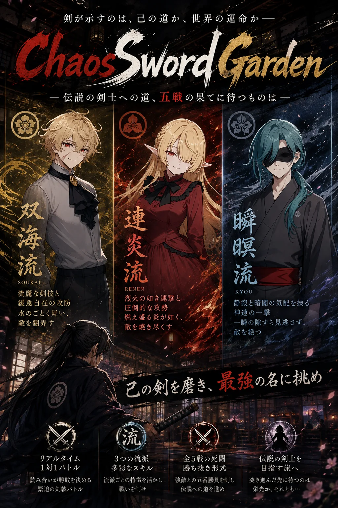

GAME 02
カオスソードガーデン
剣ひとつで勝ち上がっていく、一対一のリアルタイム戦闘です。全五戦、通しで15分ほど。
技の発生と後隙を読み合う、待つことに意味があるアクションです。

Ⅰ作品概要
| 題名TITLE | カオスソードガーデン（CHAOS SWORD GARDEN） |
|---|---|
| 種類GENRE | 剣戟アクション／一対一のリアルタイム戦闘（一人用） |
| 分量VOLUME | 勝ち抜き全五戦。通しで約15分 |
| 操作INPUT | キーボード |
| 料金PRICE | 無料。課金要素はありません |
| 記録RANKING | 勝ち抜きのスコアは全プレイヤー共通のランキングに掲載されます |
| 公開RELEASE | 2026年8月30日（ver1.0） |
| 制作AUTHOR | SY4869（個人制作） |
Ⅱゲームの特徴
野盗との喧嘩から始まり、道場へ入門し、辻斬りとの果たし合いへ。剣ひとつで勝ち上がっていく物語です。そしてある条件を満たした者の前にだけ、もう一人の相手が現れます。
- 連打では勝てない 技には振り始めてから当たるまでの間（発生）と、振り終えてから動けるようになるまでの間（後隙）があります。強い技ほど、長く無防備になります。
- 相手の隙を見てから動く 敵がオレンジに光ったら攻撃の予兆、暗くなって「スキ！」と出たら反撃の好機。画面に出ている合図を読んで、受けるか、避けるか、踏み込むかを決めます。
- 間合いがある 左右三つのマスを移動でき、相手とレーンがずれていれば攻撃は当たりません。避けるために動くのか、当てるために近づくのかを選べます。
- ビルドを組み立てる ステータス30ポイントの配分と、四つのスキル枠。勝つたびに一枠だけ入れ替えられるので、相手を見てから組み替えていきます。
- 流派で道が分かれる 一戦目に勝つと三つの流派から一つを選びます。選んだ流派で以降の対戦相手も、覚えられる技も変わります。
Ⅲ戦闘システム
ここでは何がどう働くかだけを書きます。操作と具体的な立ち回りは遊び方にまとめてあります。
発生と後隙
すべての技に、発生と後隙が設定されています。頭上のゲージが満タンになる瞬間に攻撃が当たり、当たったあとはしばらく動けません。強い技ほど発生が遅く、後隙も長い。そのため、いきなり強い技を撃つと、当たる前に潰されます。相手が動けない時間を作ってから撃つ、という順番がこのゲームの基本です。
大きな攻撃を受けると、出しかけた技が中断（ひるみ）されます。これは自分も敵も同じ条件です。
間合い
左右三つのマスを移動できます。相手とレーンがずれていれば攻撃は当たりません。一方で、当てるには合わせる必要があります。避けるための移動と、当てるための移動が同じ操作なので、どちらを取るかを常に選ぶことになります。
ガードと回避
ガードは何もしていないときだけ構えられます。技を振っている最中や移動中は守れません。振る前に、受けるか避けるかを決めておく必要があります。回避には受付時間があり、そのあいだは他の行動を取れません。
スキル
四つの枠に装備して戦います。攻撃技のほかに、自分を強化するもの、属性を付与するもの、一定時間だけ性能を変えるものなどがあります。それぞれに再使用までの待ち時間（CT）があり、強い技ほど長く設定されています。極端に強い技や、極端に弱い技を作らないように調整しています。勝つたびに一枠だけ入れ替えられるので、最初から最強の組み合わせを持つことはできません。
流派
| 双海流SOUKAI | 二刀流を軸にした流派。攻撃力を下げる代わりに、流派のスキルの再使用が速くなり、後隙も短くなります。 |
|---|---|
| 連炎流RENEN | 炎と連撃の流派。手数で押していく形になります。 |
| 瞬瞑流SHUNMEI | 雷と速さの流派。体力は低いぶん、踏み込みと一撃が鋭くなります。 |
一戦目に勝った時点で選びます。選んだ流派によって二戦目・三戦目の相手が変わり、勝利で手に入るスキルも変わります。
スコア
一戦ごとに、基礎点に速攻ボーナスが加わり、無傷ボーナスが付き、受けたダメージのぶんが引かれます。つまり速く、被弾せずに倒すほど高くなります。勝ち抜きモードの結果は全プレイヤー共通のランキングへ送信され、上位が公開されます。自由対戦では送信されません。
ランキングに載る名前は誰でも見られる状態で公開されます。本名やメールアドレスなど、ご自身を特定できる情報は入力しないでください。詳しくはプライバシーポリシーをご覧ください。
Ⅳゲームの進行
| 準備SETUP | モードを選び、名前を入力し、ステータス30ポイントを HP・攻撃力・スピードへ配分。スキルを四つ装備して開始します。 |
|---|---|
| 一戦目ROUND 1 | 野盗との喧嘩。操作を覚えるための相手です。 |
| 流派選択SCHOOL | 一戦目に勝つと、三つの流派から一つを選びます。以降の相手と報酬が決まります。 |
| 二〜三戦目ROUND 2-3 | 道場の門下生、そして師範。選んだ流派によって相手が変わります。 |
| 四戦目ROUND 4 | 複数の相手からランダムで決まります。低い確率でしか現れない相手もいます。 |
| 五戦目ROUND 5 | 最後の相手。ここまで勝ち抜けばクリアです。 |
| その先SECRET | ある条件を満たした者の前にだけ、もう一戦が用意されています。 |
負けてもその戦闘からやり直せます。勝つたびにスキルを一枠だけ入れ替えられます。記録に残さず好きな相手と一戦だけ戦える自由対戦もあります。
Ⅴ制作について
アクションゲームを作ろうとして、この形になりました。ステータスとスキルを駆使して戦うアクションにしたい。けれど複雑にはしたくない。簡単に作れるよう2Dで。そう考えていった結果が、いまの一対一の形です。
作りはじめた時点では間合いがありませんでした。実際に動かしてみるとかなり単調だったので、左右へ移動して間合いを外せる仕組みを後から足しています。スキルシステムを入れるなら発生と後隙は必須だと初めから考えていました。スキル自体は、以前作成した TRPG シナリオからの流用です。
最初から最強のビルドを組めるのではなく、ゲームを進めることで一部のスキルが解放されるほうが楽しめると考えて、勝利ごとの一枠交換という形にしました。強いスキルは発生や後隙を大きくして、ひとつの技が強くなりすぎないようにしています。極端に強い技も、極端に弱い技も作らないというのが調整の方針でした。
苦労したのは、ガード・回避・各スキルの仕様を AI に正確に伝えることです。発生中や後隙中にも他のコマンドが使えてしまう、といった問題が起きました。しかもそれらは画面を見ただけでは気づけません。どこがおかしいのかを特定するまでに時間がかかりました。
立ち絵はすべて生成 AI で作成しています。
ゼロからゲームを作るのは難しく、今後しばらくは弾幕シューティングのようにジャンルとしてベースが固まっているものを作ったほうがいい、というのが作り終えての実感です。
制作の過程はもう少し詳しく制作記録に書いています。
Ⅵ今後の改善予定
細かいバランス調整を随時行っていく予定です。スキルの強弱、敵のステータス、スコアの配分など、遊んでみて気になった箇所から手を入れていきます。
お気づきの点がありましたらお問い合わせからお知らせください。
Ⅶ対応環境
| ブラウザBROWSER | Chrome、Safari、Firefox、Edge の最新版で動作を確認しています。 |
|---|---|
| 操作INPUT | キーボードで操作します。 |
| 保存SAVE | セーブ機能はありません。ページを閉じると進行は失われます。スコアのみランキングへ記録されます。 |
| 通信NETWORK | ランキングの送信は勝ち抜きモードの終了時のみです。通信できない場合でもゲームは通常どおり遊べます。 |
Ⅷ更新履歴
| 2026年9月3日 | コンティニュー時にスコアが0にならないようにしました。回避の受付時間中は他の行動を取れないよう修正しました。 |
|---|---|
| 2026年9月1日 | 全プレイヤー共通のランキングを導入しました。中断されたスキルの自己強化が残る不具合を修正し、自由対戦では敵の登場条件を表示しないようにしました。 |
| 2026年8月30日 | ver1.0 を公開しました。あわせてクレジットを掲載しました。 |